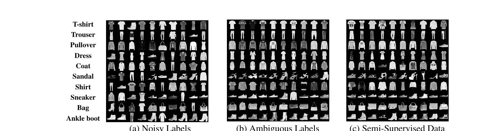
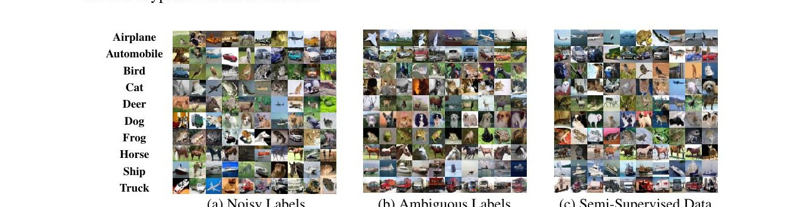
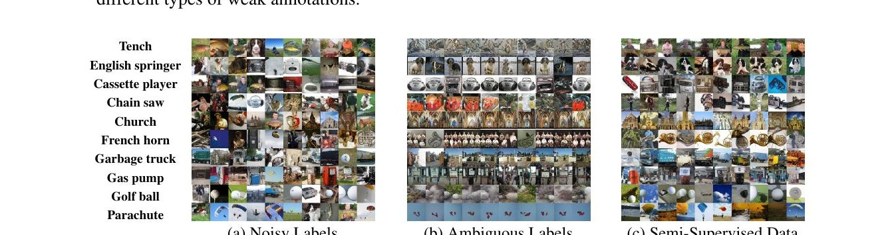
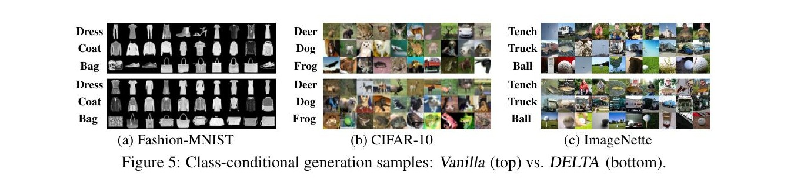
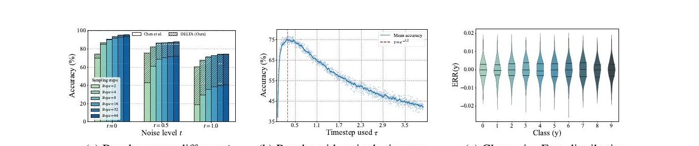

Robustly training diffusion models with noisy, ambiguous,
and incomplete annotations — under one unified framework.
University of Tokyo · RIKEN AIP · MBZUAI
Conditional diffusion models excel when given clean labels. In the wild, however, supervision arrives noisy, ambiguous, or missing entirely — and naive training collapses class-conditional scores into a homogenizing mixture that produces the wrong class or no distinct class at all.
DELTA reframes the problem through joint likelihood maximization over data and weak annotations, treating the true label as a latent variable. The objective decomposes cleanly into two synergistic terms: a generative term that recovers clean conditional scores via posterior-weighted score matching, and a classification term that infers reliable class posteriors using the diffusion model itself.
A median-centered timestep sampler makes the diffusion classifier 27.5× faster without sacrificing accuracy. Across image generation and weakly supervised classification benchmarks, DELTA matches or beats specialist baselines while requiring strictly weaker assumptions about the supervision.
Real-world annotations almost never arrive in pristine form. Crowdsourcing, web scraping, and budget constraints surface three canonical kinds of weakness — and prior diffusion methods tackle them in isolation.
The observed label $\hat{Y}$ is a corrupted version of the true label $Y$ — flipped under some unknown transition.
Each instance receives a candidate set $S \subseteq \mathcal{Y}$ guaranteed to contain the true label, and only that.
Some instances are labeled precisely; the rest are unlabeled. The bulk of the dataset carries no class signal at all.
Train a diffusion model directly on weakly-annotated pairs and you don't recover a class-conditional distribution — you recover its mixture. Generations homogenize, classes collide. The figures below show actual samples generated by naive baselines under each weak-annotation regime.



DELTA treats the true label $Y$ as latent and maximizes the joint log-likelihood of $(X, Z)$. A variational lower bound — derived under the standard class-conditional independence $X \perp Z \mid Y$ — splits the objective into a generative term and a classification term that share parameters and reinforce each other through training.
The proxy posterior $p_\phi(Y \mid X, Z)$ is taken as the EMA of the diffusion model itself, providing soft, stable targets that let each term refine the other.
Eq. 4 — The variational decomposition. Two synergistic objectives, one shared model.
The observable weak-conditional score is a posterior-weighted sum of the latent clean-conditional scores. Solve for the right weights and you can disentangle the clean signal from the mixture.
Predict per-class clean scores $s_\theta(x_t, y, t)$, then aggregate them with $p_\phi(y \mid x_t, z)$ as weights. Match the aggregate to the analytic forward-process score. Sharp posteriors → focused updates; flat posteriors → cautious distribution.
Use the diffusion model itself as a zero-shot classifier via the conditional ELBO. Specialize the loss to each weak-annotation regime: ELR-style rectification for noise, candidate-set masking for ambiguity, EMA pseudo-labels for unlabeled data.
Dynamically rectified target via early-learning regularization. Boosts gradients on clean samples, neutralizes them on memorized noise.
Mask classes outside the candidate set $s$ and renormalize. Acts as EMA-stabilized progressive identification of the true label.
Composite indicator: hard label when given, EMA pseudo-label otherwise. Recovers the standard self-training objective.
Side-by-side class-conditional samples on three datasets. The top row in each panel is the Vanilla baseline (naive training on weak annotations). The bottom row is DELTA — same architecture, same training budget, same weak-annotation input.

DELTA improves over the vanilla baseline across every metric and every annotation regime, on every dataset tested. Below: the full headline tables from the paper.
| Setting | Metric | Vanilla | DELTA | Δ | Clean ref. |
|---|---|---|---|---|---|
| CIFAR-10 · Noisy labels | |||||
| Sym-40% | FID ↓ | 3.33 | 3.47 | — | 2.05 |
| Sym-40% | CW-FID ↓ | 29.84 | 13.85 | −53.6% | 9.83 |
| Asym-40% | FID ↓ | 3.23 | 3.10 | −4.0% | 2.05 |
| Asym-40% | CW-FID ↓ | 14.70 | 13.24 | −9.9% | 9.83 |
| CIFAR-10 · Ambiguous labels | |||||
| Random | FID ↓ | 7.76 | 2.26 | −70.9% | 2.05 |
| Random | CW-FID ↓ | 27.18 | 10.65 | −60.8% | 9.83 |
| Class-Dept. | FID ↓ | 11.75 | 2.77 | −76.4% | 2.05 |
| Class-Dept. | CW-FID ↓ | 32.44 | 11.56 | −64.4% | 9.83 |
| CIFAR-10 · Semi-supervised data | |||||
| 1% labels | CW-FID ↓ | 16.25 | 16.12 | −0.8% | 9.83 |
| 10% labels | CW-FID ↓ | 11.84 | 11.77 | −0.6% | 9.83 |
| ImageNette · Ambiguous labels | |||||
| Random | FID ↓ | 79.13 | 72.62 | −8.2% | 11.52 |
| Random | CW-FID ↓ | 157.76 | 63.58 | −59.7% | 40.20 |
| Class-Dept. | FID ↓ | 91.28 | 79.12 | −13.3% | 11.52 |
| Class-Dept. | CW-FID ↓ | 163.45 | 67.92 | −58.4% | 40.20 |
| ImageNette · Semi-supervised data | |||||
| 1% labels | FID ↓ | 23.88 | 19.26 | −19.3% | 11.52 |
| 10% labels | FID ↓ | 14.32 | 12.84 | −10.3% | 11.52 |
| Method | Sym-40% FID | Sym-40% IS | Asym-40% FID | Asym-40% IS |
|---|---|---|---|---|
| CAD (Dufour et al.) | 4.10 | 9.08 | 3.87 | 9.16 |
| TDSM (Na et al.) | 3.85 | 9.40 | 3.96 | 10.12 |
| SBDC (Cong et al.) | 4.25 | 8.95 | 4.02 | 9.05 |
| RTDC (Chen et al.) | 4.00 | 9.20 | 3.85 | 9.30 |
| DELTA (ours) | 3.47 | 9.68 | 3.10 | 9.73 |
| Setting | Best specialist | Vanilla | DELTA | Δ vs best |
|---|---|---|---|---|
| Noisy labels | ||||
| Fashion-MNIST · Sym-40% | 93.13 (ELR) | 90.11 | 93.40 | +0.27 |
| Fashion-MNIST · Asym-40% | 92.82 (ELR) | 85.41 | 93.20 | +0.38 |
| CIFAR-10 · Sym-40% | 86.54 (Coteaching) | 80.22 | 88.63 | +2.09 |
| CIFAR-10 · Asym-40% | 84.89 (PENCIL) | 86.31 | 88.83 | +3.94 |
| Ambiguous labels | ||||
| Fashion-MNIST · Random | 94.11 (DIRK) | 80.20 | 94.27 | +0.16 |
| Fashion-MNIST · Class-Dept. | 93.99 (DIRK) | 66.03 | 94.20 | +0.21 |
| CIFAR-10 · Random | 93.48 (DIRK) | 60.25 | 94.70 | +1.22 |
| CIFAR-10 · Class-Dept. | 93.22 (DIRK) | 56.34 | 93.53 | +0.31 |
| Semi-supervised | ||||
| Fashion-MNIST · 1% labels | 85.31 (CoMatch) | 78.37 | 85.92 | +0.61 |
| Fashion-MNIST · 10% labels | 91.22 (SoftMatch) | 90.50 | 92.97 | +1.75 |
| CIFAR-10 · 1% labels | 73.74 (SoftMatch) | 53.49 | 76.40 | +2.66 |
| CIFAR-10 · 10% labels | 88.66 (SoftMatch) | 85.13 | 92.47 | +3.81 |
| Dataset | FID ↓ | IS ↑ | Classification Acc (%) ↑ |
|---|---|---|---|
| CIFAR10-N (real noisy labels) | 3.22 | 9.66 | 91.21 |
| PLCIFAR10 (real partial labels) | 2.95 | 9.82 | 93.65 |
| CIFAR100-N (real noisy labels) | 4.85 | 10.42 | 70.68 |
One model. Three regimes. No transition matrices, no oracle confidences, no external discriminators. The diffusion model is its own classifier, and that's enough.
The diffusion classifier evaluates an ELBO across timesteps for every class. Uniform sampling — the standard approach — wastes compute on early steps (trivial reconstructions) and late steps (noise dominates).
DELTA derives that, for the EDM log-normal weighting, the optimal interval $[l, r]$ that maximizes covered weight mass satisfies $\mathcal{F}_w(l) + \mathcal{F}_w(l + \Delta) = 1$. As $\Delta \to 0$, the optimum converges to the weight-density median $e^{-1.2} \approx 0.3$ — exactly where empirical accuracy peaks (see panel b in the figure).
Theorem 2 — Median-centered interval. Solve for $l$ by Brent's method; restrict the classifier's evaluation to that compact window.

The first systematic study unifying noisy, ambiguous, and semi-supervised annotations within diffusion training — derived from joint likelihood maximization rather than heuristic patches.
A score decomposition theorem that lets the model recover clean class-conditional scores from the observable weak-annotation score, statistically identifying the true underlying densities at the global optimum.
A median-centered timestep sampling strategy, justified by two optimality theorems, that makes posterior estimation 27.5× faster without losing accuracy.